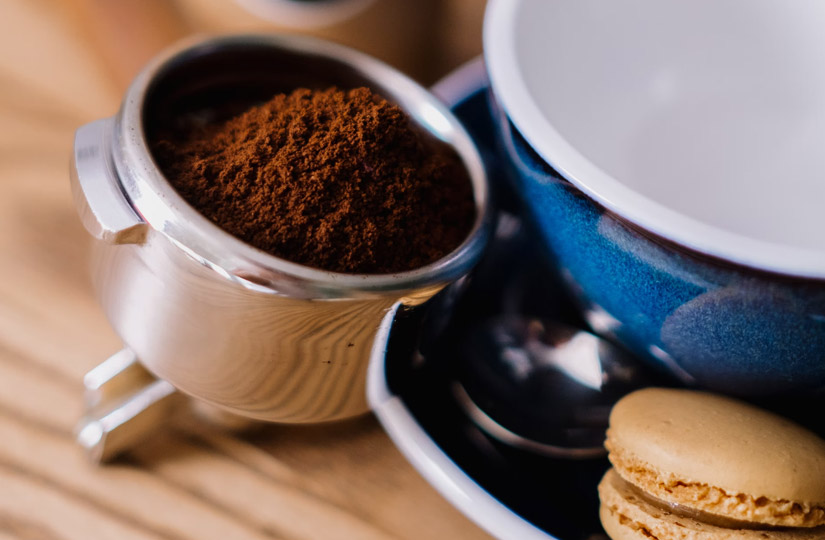
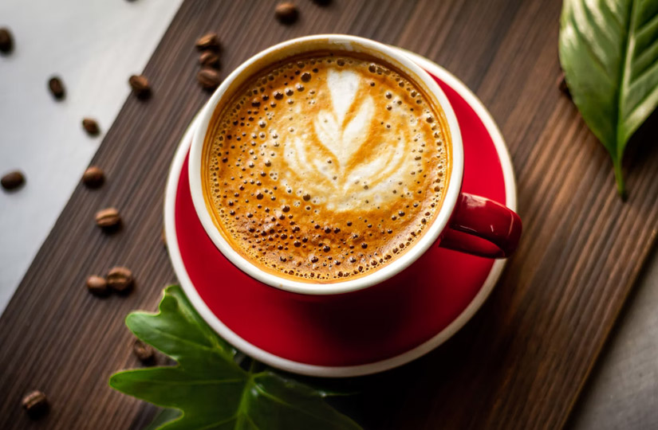

Уникальный эффект кофе
Кто-то пьет кофе из любви к его вкусу, кому-то он нужен, чтобы ярче ощутить краски жизни, но в большинстве случаев мы наливаем себе очередную порцию с простой целью – придать ясность уму и увеличить работоспособность. Кофе призван дарить нам заряд бодрости в те минуты, когда наше тело не справляется с поддержанием ее на должном уровне.
Принцип действия предельно прост: кофеин препятствует полноценной работе аденозиновых рецепторов у нас в мозгу, отвечающих за чувство усталости. Однако чем больше кофе мы пьем, тем больше таких рецепторов в ответ активирует наш организм, пытаясь добиться равновесия и не давая сбить себя с толку. Эта ответная реакция и называется кофеиновой толерантностью.
Человек, который употребляет кофе впервые или после длительного перерыва, имеет нулевую толерантность к кофеину. Вот что он обычно испытывает:
- чувство эйфории,
- приятные ощущения от рутинных дел,
- повышенную мотивацию,
- заметный скачок энергии.
Употребление того же количества кофеина в течение следующих дней приведет к снижению этих эффектов, а увеличение количества кофе – и к полной толерантности.
У кого и как быстро развивается кофеиновая толерантность
Вы не поверите, но почти у всех. Исследования показывают, что буквально за 3–5 дней наш организм привыкает к воздействию кофеина и перестает реагировать на него, как в первые дни. Этот факт может показаться грустным, но у него есть обратная сторона: так же быстро мы можем и избавиться от этой толерантности.
В целом сложно заранее предугадать, как скоро каждый отдельно взятый человек перестанет ощущать бодрость, выпивая свою ежедневную чашку кофе, – слишком много факторов влияет на это, включая наследственность, состояние здоровья и психики, вес и скорость метаболизма, качество питания, условия работы, наличие вредных привычек и т. п.
Как узнать, есть ли у вас толерантность к кофеину
Главный показатель, как мы уже писали выше, заключается в том, что обычный объем кофе больше не дает вам прежней концентрации или бодрости. Для достижения желаемого эффекта приходится пить все больше и больше кофе, наращивая темпы и постепенно выходя за рамки разумного.
Второй критерий – вы совсем не можете без кофе. Если не выпить привычную чашку/две/пять, то дела просто валятся из рук, а голова не включается. Этот симптом, конечно, больше говорит о кофеиновой зависимости, но она идет рука об руку с толерантностью и тоже сигналит нам о необходимости принять меры.
Что делать, если вы диагностировали у себя кофеиновую толерантность
Хорошая новость заключается в том, что не нужно полностью отказываться от любимого напитка, даже если он перестал работать. Более того, не следует принимать никаких героических решений в духе «С завтрашнего дня навсегда бросаю!». Гораздо полезнее и бережнее для нашего тела медленное снижение темпов, а не исключение кофе из рациона. Это позволит избежать неприятного синдрома отмены, который обычно сопровождается головной болью, апатией, нарушением биоритмов и даже тошнотой.
К чему такие страдания? Верно, ни к чему. Поэтому, обнаружив у себя стойкую толерантность к кофеину, плавно выходите из нее, день за днем понемногу уменьшая количество кофе, пока не дойдете до 1 чашки некрепкого напитка. Вот тогда можно будет сделать на какое-то время перерыв – день-два, а лучше неделю пожить не только без кофе, но и без крепкого зеленого чая, темного шоколада и других кофеинсодержащих продуктов. Длительность такого «поста» определяйте для себя самостоятельно в зависимости от того, насколько сильно развилась ваша устойчивость.
Как избежать формирования толерантности
Восстановить нормальный уровень восприятия кофеина не так уж сложно, но лучше вовсе не доводить до момента, когда это понадобится.
Чтобы избежать появления толерантности, пользуйтесь принципом цикличности в употреблении кофе. Что это означает? Говоря простыми словами, вам нужно поймать баланс заранее. Если пришлось выпить много кофе в один день, осознанно и стойко уменьшите его употребление в другие дни.
Формат цикла выберите самостоятельно в соответствии с потребностями и особенностями организма. Попробуйте выпивать в понедельник и вторник по 1 чашке кофе, в среду и четверг – по 2, в пятницу – 3, а на выходные взять полный тайм-аут. Это, конечно, примерная схема, она тут для вдохновения, ведь мы не знаем точно, в какой именно из дней недели вам нужно больше кофе, а в какой – меньше.
Диетологи также очень рекомендуют не заменять кофеином приемы пищи: это приводит к снижению уровня энергии и неоправданному желанию выпить дополнительную чашку кофе, когда на самом деле стоило бы просто перекусить.